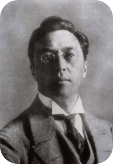

"Sans-Titre"

« Créer une œuvre d’art, c’est créer un monde. »
Pionnier de l’art abstrait, Vassily Kandinsky (1866 – 1944) n’est pas seulement russe : il est avant tout un artiste international qui a vécu plusieurs années à Paris, a voyagé en Europe, et s’est fait connaître par son essai théorique Du spirituel dans l’art (1911). Cet artiste majeur, membre du Bauhaus et créateur du Blaue Reiter, marque un tournant décisif dans la naissance de l’abstraction. Il est à l’origine d’un langage nouveau qui exprime sa « nature intérieure » et qui fait appel à la musicalité
Vassily Kandinsky est né à Moscou, C’est un enfant extrêmement sensible, en particulier à la couleur. La découverte d’un tableau impressionniste de Claude Monet le marque considérablement et détermine sa vocation d’artiste.
C’est pourtant à une carrière dans le droit qu’il se destine originellement. À l’âge de 30 ans seulement, Kandinsky décide de tout abandonner pour se consacrer à la peinture, sa passion secrète !